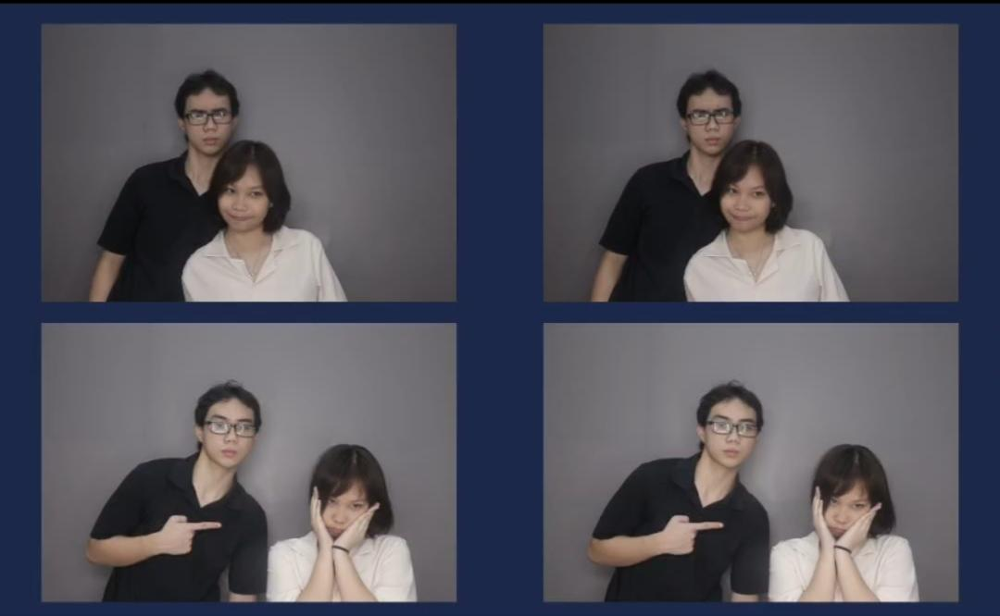
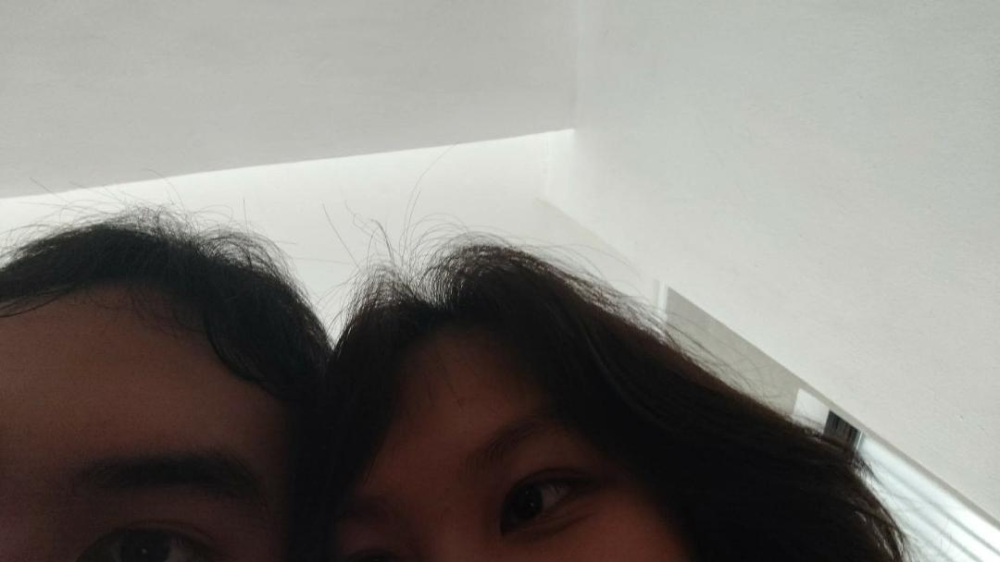
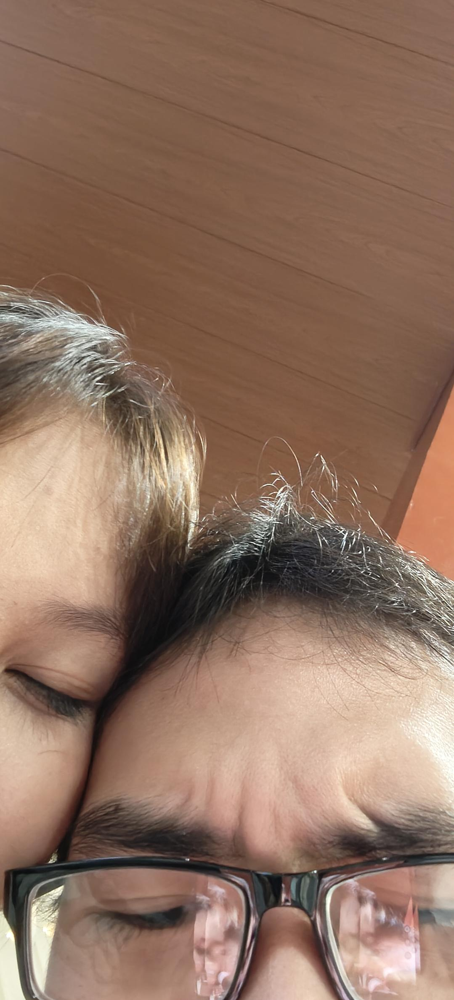

Every moment with you is my favorite memory. Thank you for being my happiness, my safe place, and my greatest blessing.

Our first date will always be my favorite time ever, I love how I enjoyed that day and be with you :3

Being with you feels like coming home. Through every laugh and every quiet moment, you make life warmer, brighter, and so much more meaningful. I love the way we fit together, how we can be ourselves, and how even the simplest moments feel special just because we're sharing them.

Lastly, having you in my birthday is the most happiest gift I ever received, and i cant thank you enough for being the most amzing person in my life baby.
Lastly, I want you to know I will never ever leave you. No matter how hard the challenges were going to face through, I will stay kasi MAHAL KITA. Mahal kita at hindi ko kayang hindi ka mahalin Cailey. Mashado kitang mahal para gawin ko yung karumaldumal na yon. You helped me learned all about you and will never stop na matutunan kita. Mahal kita kahit sa malungkot, masaya, o kahit pagod na araw, mahal kita Cailey. Bakit nga ba kita mahal? Kasi nakita ko kung ano hindi nakikita ng ibang tao kung sino ka. ikaw ang the best Person I will ever have for eternity. Tatangapin kita kung sino ka, kahit hindi ka magpaganda kasi sa paningin ko, NAPAKA GANDA MO PANGAKO. Hindi lang sa mukha pati rin saloobin mo. Hindi ko makakalimutan yung mga araw nag uusap pa tayo ng wala pa tayo, nagpapakipot sayo at simpleng one point Goodnight sayo sa call dati hehe. Pero kahit ganon lang ako dati. Alam kong mamahalin kita ng sobra, isang kalapastangan na hindi ka mahalin. Kasi ikaw Cailey? Sapat ka na at ikaw lang iibigin ng puso kong malambot, ikaw ang pahinga at tahanan ko. Halika dito ka sakin at mamahalin kita ng SOBRANG SOBRA hindi ako magkukulang saating dalawa. Kung meron pang word nag beyond sa I love you siguro para sakin Iniirog kita sa mahabang panohon, kahit sa pagtanda, at sa kamatayan nating dalawa. Lastly, I am so grateful for having you in my life baby. Sobra ang pasasalamat ko kay Lord kasi binigay niya ako ng ikaw. At PARA sakin hindi kita bibiguin at mamahalin kita habang buhay, Cailey<3
I love you endlessly BOSSING